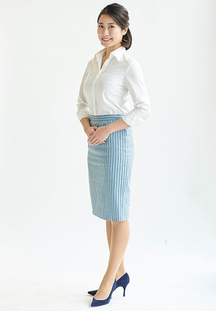

PROFILE
須山 梨菜



須山 梨菜Rina Suyama
| カテゴリ | MC/司会、ナレーター、モデル |
|---|---|
| 地域 | 関東 |
| 身長 | 165cm |
| 趣味 | ダイビング、ドルフィンスイム、旅行、車、日本酒 |
| 特技 | 空手、素潜り、ハープ |
| 資格 | 空手初段
ダイビングライセンス(アドバンス） 普通自動車免許（MT） |
| 参考URL | |
| 音声サンプル | |
| SNS |
経歴
【VP/MA】
- イオン実演型接客動画ナビゲーター
- Miss SAKE Channelナビゲーター
- 大東建託VPインタビュアー
- オンライン日本酒フェア/神奈川県酒造組合動画プレゼン
- コニカミノルタジャパンサービス紹介動画ナレーション
- ボンズ企画事業紹介動画ナレーション
- リコージャパンWEB・展示会用動画ナレーション
- プランニングヴィ保険制度説明動画ナレーション
- 日本情報システム事業紹介動画ナレーション
- コニカミノルタジャパン事業紹介動画ナレーション
- NTTテクノロス製品デモ動画ナレーション
- 日本情報システム事業紹介動画ナレーション
- 興和化成会社説明動画ナレーション
【オンライン】
- SUBARU アクセサリームービーナビゲーター
- 野村総合研究所オンラインイベント
- オンライン日本酒フェア
- TOYOTA GR ラリーチャレンジ配信リポーター
- Japan Hybrid Conference リポーター
- “いちかわ”からはじめるSDGs オンライン講演会
- インフィニオンテクノロジーズオンラインイベント
【式典司会】
- Epics全社忘年会
- 第48回オールスバル中部近畿エリア表彰式、祝賀会
- FLIGHT OF DREAMS プレビューデー開閉会式
- 東京スバル販売協力店総会
- オールスバル表彰式典
- オールスバル関東・北信越エリア表彰式典
- 新潟スバル有力販売店大会
- 世界技術コンクール2017
- アイサイトツーリングアシスト体感試乗会開閉会式
- スバコミゴルフサークルin東海
- スバルゴルフチャレンジトーナメントコンペ表彰式
- 全国スバルセールスコンテスト
- 株式会社スバル取引先表彰式
- 富士重工業株式会社賀詞交換会
- 富士重工業株式会社特約店表彰式
- 中四国エリア祝賀会
- 中部近畿エリア祝賀会
- 札幌北店オープンイベント
- 全国スバルサービス技術コンクール
- スバル「新型インプレッサ」メディア試乗会オープニングセレモニー
【イベントMC】
- Kawasaki Coffee Break Meeting@福島 KAZEギャル
- kawasaki coffee break meeting@沖縄 KAZEギャル
- オンワード運動会
- 冠二郎と歌仲間チャリティーコンサート
- マイカーステーション2019横浜
- プランインターナショナルチャリティートークライブ（旅インフルエンサーNATSUCOさん、他）
- 大宮着物フェスティバル（着物作家 千地康弘さん、演歌歌手 田川寿美さん）
- ヨコハマサイクルスタイル/KJC
- 埼玉サイクルエキスポ/KJC
- サイクルモードライド大阪/KJC
- ゲレンデタクシーinエコーバレー
- ゲレンデタクシーin栂池
- お台場旧車天国/スバル天国
- スバルジャンボリー
- スバル新型車メディア試乗会
- 神奈川スバル2018年新型車プレス説明会、プロドライバートークショー
- ようこそワンガン夏祭りTHEODAIBA2018
- ボーイング787に会いに行こう
- スバコミオフ会in浜名湖 トークショー（フォレスター開発責任者布目さん）
- ノスタルジック2デイズ トークショー（富士重工業元エンジニア大林眞悟さん、キャラクターデザイナー中野シロウさん）
- 大学キャンパス出張授業（スバル役員講演会）
- 星空ツアー＠福岡 体験コンテンツプレゼンター
- 星空ツアー＠阿智村 メインステージ
- お台場みんなの夢大陸/スバル
- 深井製作所 特販展示会
- お台場みんなの夢大陸2016/スバル
- 新型インプレッサ先行展示イベント
- スバルnewインプレッサ発表会 影ナレ
- スバルショップ ビジネスミーティング
- スバルファンミーティング inマキノ高原 会場アナウンス
- 羊ヶ丘通り清田店 初売りフェアじゃんけん大会、ラジオ出演など
【展示会NA】
- Inter BEE 2021/パナソニック
- 国際物流総合展2021/NEC
- モダンホスピタルショー2021/アライドテレス
- 建設・測量生産性向上展/日立建機
- 第8回働き方改革EXPO/オカムラ
- Interop2021/アライドテレシス
- FOODEX JAPAN 2021リポーター
- 医療IT関西/アライドテレシス
- 東京モーターショー2019/TStech
- Photonics2019/アマダ
- シーテック2019/アマダ
- 地方自治体情報化推進フェア/東芝
- NTT communications forum メインステージ
- イノベーションジャパン/講演会
- MF-Tokyo/アマダ
- 東京オートサロン/スバル（2017年～2019年）
- 信州カーフェスタ/スバル
- モータースポーツジャパン/スバル
- 東北モーターショーin仙台/スバル
- 札幌モーターショー/スバル
- 東京モーターショー2017/スバル
- 名古屋モーターショー2017/スバル
- 福岡モーターショー2017/スバル
- 大阪モーターショー2017/スバル
- エコプロ2016/スバル
【TV/ラジオ】
- HBC北海道放送「金曜ブランチ」告知出演
- STV札幌テレビ放送「どさんこワイド」告知出演
- HBC北海道放送「今日ドキッ」告知出演
- HTB北海道テレビ「イチオシ」告知出演
- FMノースウェーブ 告知出演
- 名古屋テレビ「ドデスカ」告知出演
- CBC中部日本放送「ゴゴスマ」告知出演
- 東海テレビ「スイッチ」告知出演
- RBC琉球放送「共感バラエティあるある沖縄2017」ショートムービー
【ステージアテンド】
- 第74回毎日映画コンクール
- 全国スバルセールスコンテスト
- オールスバル関東・北信越エリア表彰式典
- 世界技術コンクール2017
- 東京スバル販売協力店総会
- オールスバル表彰式典
- 中四国エリア表彰式
- 中部近畿エリア表彰式
- STARS認定式（2016年、2018年）
【モデルコンパニオン】
- 世界一受けたい授業THE LIVE
- 六本木ヒルズサマーステーション2018
- スバル広報メディア試乗会
- スバル「新型フォレスター」発表会
- NECゴルフトーナメント/スバル
- 人と車のテクノロジー展/スバル
- 大阪オートメッセ2017/スバル
- アウトドアデイジャパン
- 東京モーターフェス/スバル
【その他】
- 2021 Miss SAKE ナデシコプログラム話し方講師
- 2020 Miss SAKE 準グランプリ
- SUBARUマガジン
- 東京美人プロジェクトお披露目会 選抜メンバー代表